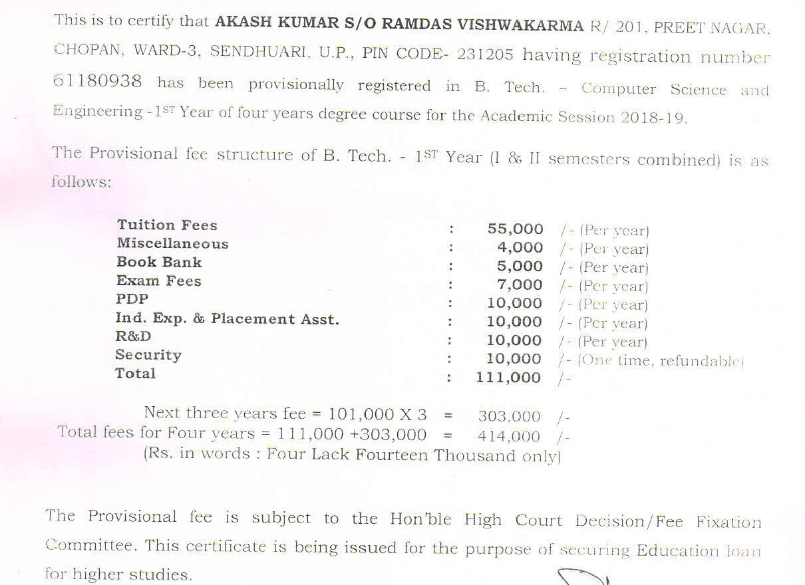
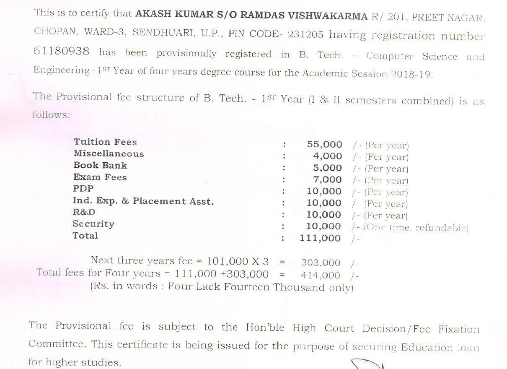

IIMT Group of Colleges came into existence in 1994. The College has inherited a bounteous legacy of quality education propounded by our great sages and scientists, and has earned exemplary recognition in all walks of life such as corporate world, academics and social life. It aims at providing global education infused with core moral values. The College runs several professional programmes such as Diploma, UG, PG, Management, Mass Communication, Pharmacy, Law and B.Ed. The IIMT Group has earned accolade of top management college in Delhi NCR, and best MBA College in UP. The Group has also bagged the best MCA College in UP. Moreover, the Group envisions getting status of global academic institution through innovations and research emphatically focused on environmental issues.
IIMT College Fee Recipt:-

Events
JAN
7
FDP
09:30 AM - 05:00 PM
College of Law, Greater Noida
SEP
25
Motivational Talk
12:00pm - 2:00pm
IIMT College of Engineering, Greater Noida
MAY
5
Scholarship Test Prize Distribution by RJ Naved
02:00 PM - 05:00 PM
IIMT Campus, Greater Noida
MAY
22
FDP on Cryptography
09:30 AM - 05:00 PM
IIMT Campus, Greater Noida
All events
Course Finder
View all our courses
Campus Tour
IIMT Group Of Colleges.
Related Links
Scholarship Test Result
Alumni Meet- Milan 2K18 Registration
FDP LAW Registration 2019
Foreign Tours & Scholarships
UPSEE 2018 Admission
Testimonials
Arrangements are very good, Knowledge of is also very good
Saji Nand Kumar
Oerlikon Graziano